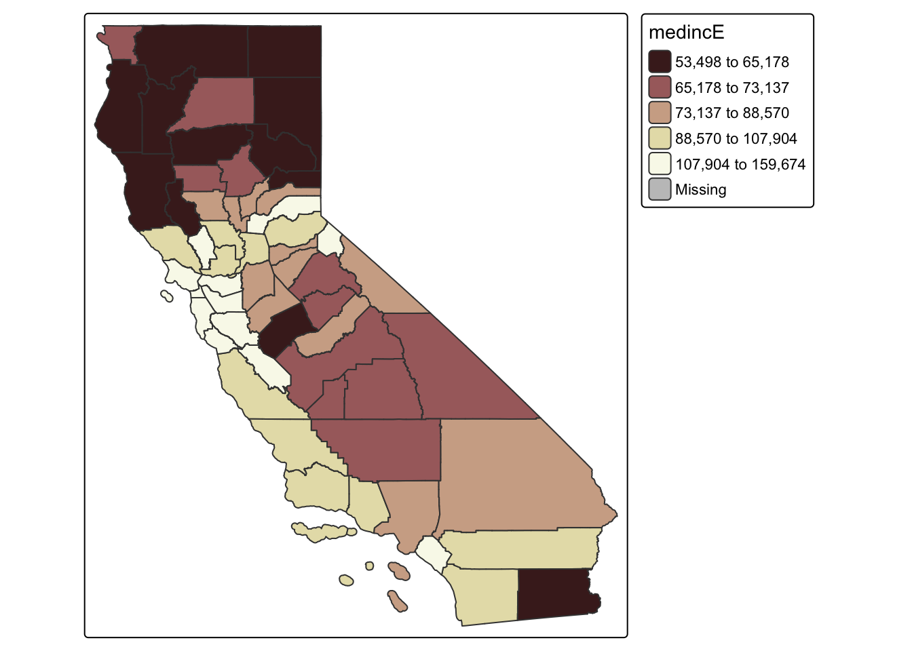
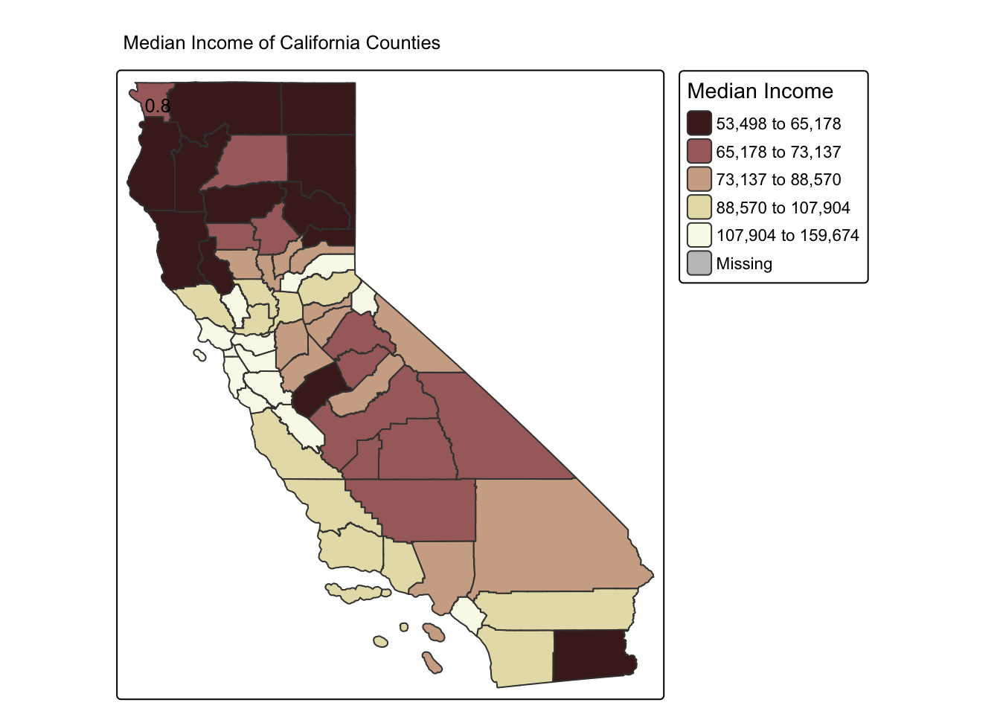
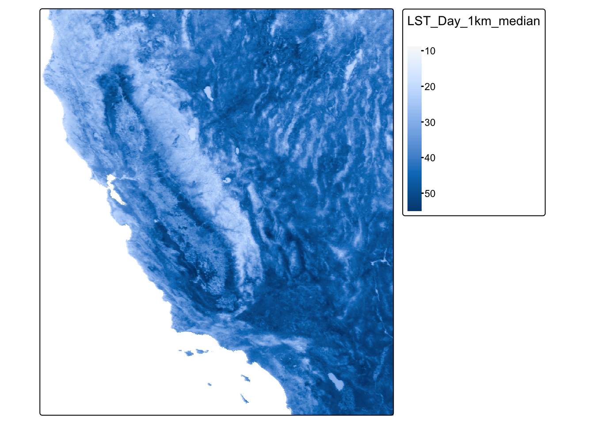
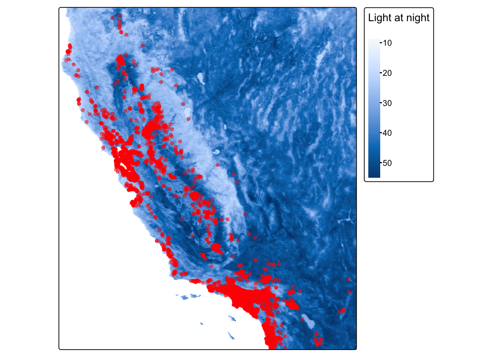

Lab Assignment 2
Peter James
2025-04-24
library(sf)## Linking to GEOS 3.13.0, GDAL 3.8.5, PROJ 9.5.1; sf_use_s2() is TRUElibrary(MapGAM)## Loading required package: sp## Loading required package: gam## Loading required package: splines## Loading required package: foreach## Loaded gam 1.22-5## Loading required package: survivallibrary(tidyverse)## ── Attaching core tidyverse packages ──────────────────────── tidyverse 2.0.0 ──
## ✔ dplyr 1.1.4 ✔ readr 2.1.5
## ✔ forcats 1.0.0 ✔ stringr 1.5.1
## ✔ ggplot2 3.5.2 ✔ tibble 3.2.1
## ✔ lubridate 1.9.4 ✔ tidyr 1.3.1
## ✔ purrr 1.0.4## ── Conflicts ────────────────────────────────────────── tidyverse_conflicts() ──
## ✖ purrr::accumulate() masks foreach::accumulate()
## ✖ dplyr::filter() masks stats::filter()
## ✖ dplyr::lag() masks stats::lag()
## ✖ purrr::when() masks foreach::when()
## ℹ Use the conflicted package (<http://conflicted.r-lib.org/>) to force all conflicts to become errorslibrary(tidycensus)
library(flextable)##
## Attaching package: 'flextable'
##
## The following object is masked from 'package:purrr':
##
## composelibrary(RColorBrewer)
library(tmap)
library(terra)## terra 1.8.29
##
## Attaching package: 'terra'
##
## The following objects are masked from 'package:flextable':
##
## align, colorize, rotate, width
##
## The following object is masked from 'package:tidyr':
##
## extractQuestion 1.
ca.county <- get_acs(geography = "county",
year = 2023,
variables = c(medinc = "B19013_001"),
state = "CA",
output = "wide",
survey = "acs5",
geometry = TRUE,
cb = FALSE)## | | | 0% | | | 1% | |= | 1% | |= | 2% | |== | 2% | |== | 3% | |== | 4% | |=== | 4% | |=== | 5% | |==== | 5% | |==== | 6% | |===== | 6% | |===== | 7% | |===== | 8% | |====== | 8% | |====== | 9% | |======= | 9% | |======= | 10% | |======= | 11% | |======== | 11% | |======== | 12% | |========= | 12% | |========= | 13% | |========= | 14% | |========== | 14% | |========== | 15% | |=========== | 15% | |=========== | 16% | |============ | 16% | |============ | 17% | |============ | 18% | |============= | 18% | |============= | 19% | |============== | 19% | |============== | 20% | |============== | 21% | |=============== | 21% | |=============== | 22% | |================ | 22% | |================ | 23% | |================ | 24% | |================= | 24% | |================= | 25% | |================== | 25% | |================== | 26% | |=================== | 26% | |=================== | 27% | |=================== | 28% | |==================== | 28% | |==================== | 29% | |===================== | 29% | |===================== | 30% | |===================== | 31% | |====================== | 31% | |====================== | 32% | |======================= | 32% | |======================= | 33% | |======================= | 34% | |======================== | 34% | |======================== | 35% | |========================= | 35% | |========================= | 36% | |========================== | 36% | |========================== | 37% | |========================== | 38% | |=========================== | 38% | |=========================== | 39% | |============================ | 39% | |============================ | 40% | |============================ | 41% | |============================= | 41% | |============================= | 42% | |============================== | 42% | |============================== | 43% | |============================== | 44% | |=============================== | 44% | |=============================== | 45% | |================================ | 45% | |================================ | 46% | |================================= | 46% | |================================= | 47% | |================================= | 48% | |================================== | 48% | |================================== | 49% | |=================================== | 49% | |=================================== | 50% | |=================================== | 51% | |==================================== | 51% | |==================================== | 52% | |===================================== | 52% | |===================================== | 53% | |===================================== | 54% | |====================================== | 54% | |====================================== | 55% | |======================================= | 55% | |======================================= | 56% | |======================================== | 56% | |======================================== | 57% | |======================================== | 58% | |========================================= | 58% | |========================================= | 59% | |========================================== | 59% | |========================================== | 60% | |========================================== | 61% | |=========================================== | 61% | |=========================================== | 62% | |============================================ | 62% | |============================================ | 63% | |============================================ | 64% | |============================================= | 64% | |============================================= | 65% | |============================================== | 65% | |============================================== | 66% | |=============================================== | 66% | |=============================================== | 67% | |=============================================== | 68% | |================================================ | 68% | |================================================ | 69% | |================================================= | 69% | |================================================= | 70% | |================================================= | 71% | |================================================== | 71% | |================================================== | 72% | |=================================================== | 72% | |=================================================== | 73% | |=================================================== | 74% | |==================================================== | 74% | |==================================================== | 75% | |===================================================== | 75% | |===================================================== | 76% | |====================================================== | 76% | |====================================================== | 77% | |====================================================== | 78% | |======================================================= | 78% | |======================================================= | 79% | |======================================================== | 79% | |======================================================== | 80% | |======================================================== | 81% | |========================================================= | 81% | |========================================================= | 82% | |========================================================== | 82% | |========================================================== | 83% | |========================================================== | 84% | |=========================================================== | 84% | |=========================================================== | 85% | |============================================================ | 85% | |============================================================ | 86% | |============================================================= | 86% | |============================================================= | 87% | |============================================================= | 88% | |============================================================== | 88% | |============================================================== | 89% | |=============================================================== | 89% | |=============================================================== | 90% | |=============================================================== | 91% | |================================================================ | 91% | |================================================================ | 92% | |================================================================= | 92% | |================================================================= | 93% | |================================================================= | 94% | |================================================================== | 94% | |================================================================== | 95% | |=================================================================== | 95% | |=================================================================== | 96% | |==================================================================== | 96% | |==================================================================== | 97% | |==================================================================== | 98% | |===================================================================== | 98% | |===================================================================== | 99% | |======================================================================| 99% | |======================================================================| 100%Question 2.
glimpse(ca.county)## Rows: 58
## Columns: 5
## $ GEOID <chr> "06091", "06067", "06083", "06009", "06111", "06037", "06097"…
## $ NAME <chr> "Sierra County, California", "Sacramento County, California",…
## $ medincE <dbl> 60000, 88724, 95977, 79877, 107327, 87760, 102840, 68750, 102…
## $ medincM <dbl> 17579, 986, 1875, 4638, 1391, 463, 2032, 2976, 899, 1891, 257…
## $ geometry <MULTIPOLYGON [°]> MULTIPOLYGON (((-120.5559 3..., MULTIPOLYGON (((…Question 3. Map
tm_shape(ca.county) +
tm_polygons(col = "medincE", style = "quantile")## ## ── tmap v3 code detected ───────────────────────────────────────────────────────## [v3->v4] `tm_polygons()`: instead of `style = "quantile"`, use fill.scale =
## `tm_scale_intervals()`.
## ℹ Migrate the argument(s) 'style' to 'tm_scale_intervals(<HERE>)'
## [v3->v4] `tm_polygons()`: use 'fill' for the fill color of polygons/symbols
## (instead of 'col'), and 'col' for the outlines (instead of 'border.col').
Question 4. Change color palette
tm_shape(ca.county) +
tm_polygons(col = "medincE", style = "quantile", palette = "pink")## ## ── tmap v3 code detected ───────────────────────────────────────────────────────## [v3->v4] `tm_polygons()`: instead of `style = "quantile"`, use fill.scale =
## `tm_scale_intervals()`.
## ℹ Migrate the argument(s) 'style', 'palette' (rename to 'values') to
## 'tm_scale_intervals(<HERE>)'
Question 5. Add title and legend
tm_shape(ca.county) +
tm_polygons(col = "medincE", style = "quantile", palette = "pink", title = "Median Income") +
tm_layout(main.title = "Median Income of California Counties", title.size = 0.8, legend.outside = TRUE)## ## ── tmap v3 code detected ───────────────────────────────────────────────────────## [v3->v4] `tm_polygons()`: instead of `style = "quantile"`, use fill.scale =
## `tm_scale_intervals()`.
## ℹ Migrate the argument(s) 'style', 'palette' (rename to 'values') to
## 'tm_scale_intervals(<HERE>)'
## [v3->v4] `tm_polygons()`: migrate the argument(s) related to the legend of the
## visual variable `fill` namely 'title' to 'fill.legend = tm_legend(<HERE>)'
## [v3->v4] `tm_layout()`: use `tm_title()` instead of `tm_layout(title = )`
## [v3->v4] `tm_layout()`: use `tm_title()` instead of `tm_layout(main.title = )`
Raster Data
Question 6.
url <- "https://github.com/pjames-ucdavis/SPH215/raw/main/LST_med_ca.tif"
download.file(url, destfile = "LST_med_ca.tif", mode = "wb")
LST_raster = rast("LST_med_ca.tif")Question 7. Map
lst_map = tm_shape(LST_raster) +
tm_raster(style="cont") +
tm_legend(outside = TRUE)## ## ── tmap v3 code detected ───────────────────────────────────────────────────────## [v3->v4] `tm_raster()`: instead of `style = "cont"`, use col.scale =
## `tm_scale_continuous()`.lst_map## [v3->v4] `tm_legend()`: use 'tm_legend()' inside a layer function, e.g.
## 'tm_polygons(..., fill.legend = tm_legend())'
## This message is displayed once every 8 hours.
Question 8. Crop
LST_raster_crop<-crop(LST_raster, ext(-122.8, -121.5, 37.5, 38.6))
lst_map_crop = tm_shape(LST_raster_crop) +
tm_raster(style="cont") +
tm_legend(outside = TRUE)## ## ── tmap v3 code detected ───────────────────────────────────────────────────────## [v3->v4] `tm_raster()`: instead of `style = "cont"`, use col.scale =
## `tm_scale_continuous()`.lst_map_crop
Question 9. Bring in CAdata
data(CAdata)
ca_pts <- CAdata
ca_proj <- "+proj=lcc +lat_1=40 +lat_2=41.66666666666666
+lat_0=39.33333333333334 +lon_0=-122 +x_0=2000000
+y_0=500000.0000000002 +ellps=GRS80
+datum=NAD83 +units=m +no_defs"
ca_pts <- st_as_sf(CAdata, coords=c("X","Y"), crs=ca_proj)Question 10. Overlay cancer data and light at night
st_crs(ca_pts)==st_crs(LST_raster)## [1] FALSEca_pts_proj<-st_transform(ca_pts, st_crs(LST_raster))
st_crs(ca_pts_proj)==st_crs(LST_raster)## [1] TRUEst_crs(LST_raster)## Coordinate Reference System:
## User input: WGS 84
## wkt:
## GEOGCRS["WGS 84",
## ENSEMBLE["World Geodetic System 1984 ensemble",
## MEMBER["World Geodetic System 1984 (Transit)"],
## MEMBER["World Geodetic System 1984 (G730)"],
## MEMBER["World Geodetic System 1984 (G873)"],
## MEMBER["World Geodetic System 1984 (G1150)"],
## MEMBER["World Geodetic System 1984 (G1674)"],
## MEMBER["World Geodetic System 1984 (G1762)"],
## MEMBER["World Geodetic System 1984 (G2139)"],
## MEMBER["World Geodetic System 1984 (G2296)"],
## ELLIPSOID["WGS 84",6378137,298.257223563,
## LENGTHUNIT["metre",1]],
## ENSEMBLEACCURACY[2.0]],
## PRIMEM["Greenwich",0,
## ANGLEUNIT["degree",0.0174532925199433]],
## CS[ellipsoidal,2],
## AXIS["geodetic latitude (Lat)",north,
## ORDER[1],
## ANGLEUNIT["degree",0.0174532925199433]],
## AXIS["geodetic longitude (Lon)",east,
## ORDER[2],
## ANGLEUNIT["degree",0.0174532925199433]],
## USAGE[
## SCOPE["Horizontal component of 3D system."],
## AREA["World."],
## BBOX[-90,-180,90,180]],
## ID["EPSG",4326]]Map them!
NDVI_cancer_map = tm_shape(LST_raster) +
tm_raster(style = "cont", title = "Light at night") +
tm_legend(outside = TRUE) +
tm_shape(ca_pts_proj) +
tm_dots(size=0.3, alpha=0.5, col = "red")## ## ── tmap v3 code detected ───────────────────────────────────────────────────────## [v3->v4] `tm_raster()`: instead of `style = "cont"`, use col.scale =
## `tm_scale_continuous()`.
## [v3->v4] `tm_raster()`: migrate the argument(s) related to the legend of the
## visual variable `col` namely 'title' to 'col.legend = tm_legend(<HERE>)'
## [v3->v4] `tm_dots()`: use `fill_alpha` instead of `alpha`.NDVI_cancer_map
LS0tCnRpdGxlOiAiTGFiIEFzc2lnbm1lbnQgMiIKYXV0aG9yOiAiUGV0ZXIgSmFtZXMiCmRhdGU6ICIyMDI1LTA0LTI0IgpvdXRwdXQ6IGh0bWxfZG9jdW1lbnQKLS0tCgpgYGB7ciBzZXR1cCwgaW5jbHVkZT1GQUxTRX0Ka25pdHI6Om9wdHNfY2h1bmskc2V0KGVjaG8gPSBUUlVFKQpgYGAKYGBge3J9CmxpYnJhcnkoc2YpCmxpYnJhcnkoTWFwR0FNKQpsaWJyYXJ5KHRpZHl2ZXJzZSkKbGlicmFyeSh0aWR5Y2Vuc3VzKQpsaWJyYXJ5KGZsZXh0YWJsZSkKbGlicmFyeShSQ29sb3JCcmV3ZXIpCmxpYnJhcnkodG1hcCkKbGlicmFyeSh0ZXJyYSkKYGBgCgpRdWVzdGlvbiAxLgpgYGB7ciwgbWVzc2FnZT1GQUxTRX0KY2EuY291bnR5IDwtIGdldF9hY3MoZ2VvZ3JhcGh5ID0gImNvdW50eSIsIAogICAgICAgICAgICAgIHllYXIgPSAyMDIzLAogICAgICAgICAgICAgIHZhcmlhYmxlcyA9IGMobWVkaW5jID0gIkIxOTAxM18wMDEiKSwgCiAgICAgICAgICAgICAgc3RhdGUgPSAiQ0EiLAogICAgICAgICAgICAgIG91dHB1dCA9ICJ3aWRlIiwKICAgICAgICAgICAgICBzdXJ2ZXkgPSAiYWNzNSIsCiAgICAgICAgICAgICAgZ2VvbWV0cnkgPSBUUlVFLAogICAgICAgICAgICAgIGNiID0gRkFMU0UpCmBgYAoKUXVlc3Rpb24gMi4KYGBge3J9CmdsaW1wc2UoY2EuY291bnR5KQpgYGAKUXVlc3Rpb24gMy4KTWFwCmBgYHtyfQp0bV9zaGFwZShjYS5jb3VudHkpICsKICB0bV9wb2x5Z29ucyhjb2wgPSAibWVkaW5jRSIsIHN0eWxlID0gInF1YW50aWxlIikKYGBgCgpRdWVzdGlvbiA0LgpDaGFuZ2UgY29sb3IgcGFsZXR0ZQpgYGB7cn0KdG1fc2hhcGUoY2EuY291bnR5KSArCiAgdG1fcG9seWdvbnMoY29sID0gIm1lZGluY0UiLCBzdHlsZSA9ICJxdWFudGlsZSIsIHBhbGV0dGUgPSAicGluayIpCmBgYAoKUXVlc3Rpb24gNS4KQWRkIHRpdGxlIGFuZCBsZWdlbmQKYGBge3J9CnRtX3NoYXBlKGNhLmNvdW50eSkgKwogIHRtX3BvbHlnb25zKGNvbCA9ICJtZWRpbmNFIiwgc3R5bGUgPSAicXVhbnRpbGUiLCBwYWxldHRlID0gInBpbmsiLCB0aXRsZSA9ICJNZWRpYW4gSW5jb21lIikgKwogIHRtX2xheW91dChtYWluLnRpdGxlID0gIk1lZGlhbiBJbmNvbWUgb2YgQ2FsaWZvcm5pYSBDb3VudGllcyIsIHRpdGxlLnNpemUgPSAwLjgsIGxlZ2VuZC5vdXRzaWRlID0gVFJVRSkKYGBgCgojIFJhc3RlciBEYXRhCgpRdWVzdGlvbiA2LgpgYGB7cn0KdXJsIDwtICJodHRwczovL2dpdGh1Yi5jb20vcGphbWVzLXVjZGF2aXMvU1BIMjE1L3Jhdy9tYWluL0xTVF9tZWRfY2EudGlmIgpkb3dubG9hZC5maWxlKHVybCwgZGVzdGZpbGUgPSAiTFNUX21lZF9jYS50aWYiLCBtb2RlID0gIndiIikKTFNUX3Jhc3RlciA9IHJhc3QoIkxTVF9tZWRfY2EudGlmIikKYGBgCgpRdWVzdGlvbiA3LgpNYXAKYGBge3J9CmxzdF9tYXAgPSB0bV9zaGFwZShMU1RfcmFzdGVyKSArCiAgdG1fcmFzdGVyKHN0eWxlPSJjb250IikgKwogIHRtX2xlZ2VuZChvdXRzaWRlID0gVFJVRSkKbHN0X21hcApgYGAKClF1ZXN0aW9uIDguCkNyb3AKYGBge3J9CkxTVF9yYXN0ZXJfY3JvcDwtY3JvcChMU1RfcmFzdGVyLCBleHQoLTEyMi44LCAtMTIxLjUsIDM3LjUsIDM4LjYpKQoKbHN0X21hcF9jcm9wID0gdG1fc2hhcGUoTFNUX3Jhc3Rlcl9jcm9wKSArCiAgdG1fcmFzdGVyKHN0eWxlPSJjb250IikgKwogIHRtX2xlZ2VuZChvdXRzaWRlID0gVFJVRSkKbHN0X21hcF9jcm9wCmBgYAoKClF1ZXN0aW9uIDkuCkJyaW5nIGluIENBZGF0YQoKYGBge3J9CmRhdGEoQ0FkYXRhKQpjYV9wdHMgPC0gQ0FkYXRhCmNhX3Byb2ogPC0gIitwcm9qPWxjYyArbGF0XzE9NDAgK2xhdF8yPTQxLjY2NjY2NjY2NjY2NjY2IAogICAgICAgICAgICAgK2xhdF8wPTM5LjMzMzMzMzMzMzMzMzM0ICtsb25fMD0tMTIyICt4XzA9MjAwMDAwMCAKICAgICAgICAgICAgICt5XzA9NTAwMDAwLjAwMDAwMDAwMDIgK2VsbHBzPUdSUzgwIAogICAgICAgICAgICAgK2RhdHVtPU5BRDgzICt1bml0cz1tICtub19kZWZzIgoKY2FfcHRzIDwtIHN0X2FzX3NmKENBZGF0YSwgY29vcmRzPWMoIlgiLCJZIiksIGNycz1jYV9wcm9qKQpgYGAKClF1ZXN0aW9uIDEwLgpPdmVybGF5IGNhbmNlciBkYXRhIGFuZCBsaWdodCBhdCBuaWdodApgYGB7cn0Kc3RfY3JzKGNhX3B0cyk9PXN0X2NycyhMU1RfcmFzdGVyKQpjYV9wdHNfcHJvajwtc3RfdHJhbnNmb3JtKGNhX3B0cywgc3RfY3JzKExTVF9yYXN0ZXIpKQpzdF9jcnMoY2FfcHRzX3Byb2opPT1zdF9jcnMoTFNUX3Jhc3RlcikKc3RfY3JzKExTVF9yYXN0ZXIpCmBgYAoKTWFwIHRoZW0hCmBgYHtyfQpORFZJX2NhbmNlcl9tYXAgPSB0bV9zaGFwZShMU1RfcmFzdGVyKSArCiAgdG1fcmFzdGVyKHN0eWxlID0gImNvbnQiLCB0aXRsZSA9ICJMaWdodCBhdCBuaWdodCIpICsKICB0bV9sZWdlbmQob3V0c2lkZSA9IFRSVUUpICsKICB0bV9zaGFwZShjYV9wdHNfcHJvaikgKyAKICB0bV9kb3RzKHNpemU9MC4zLCBhbHBoYT0wLjUsIGNvbCA9ICJyZWQiKQoKTkRWSV9jYW5jZXJfbWFwCmBgYAoK